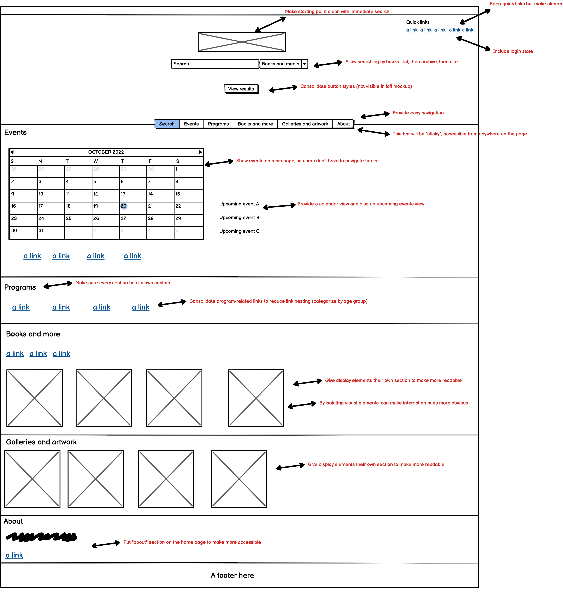
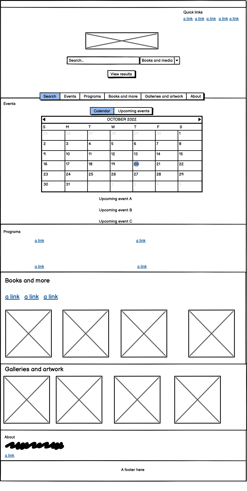
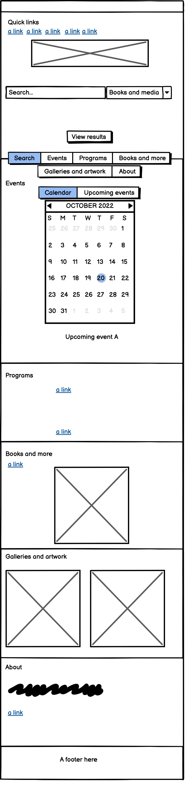
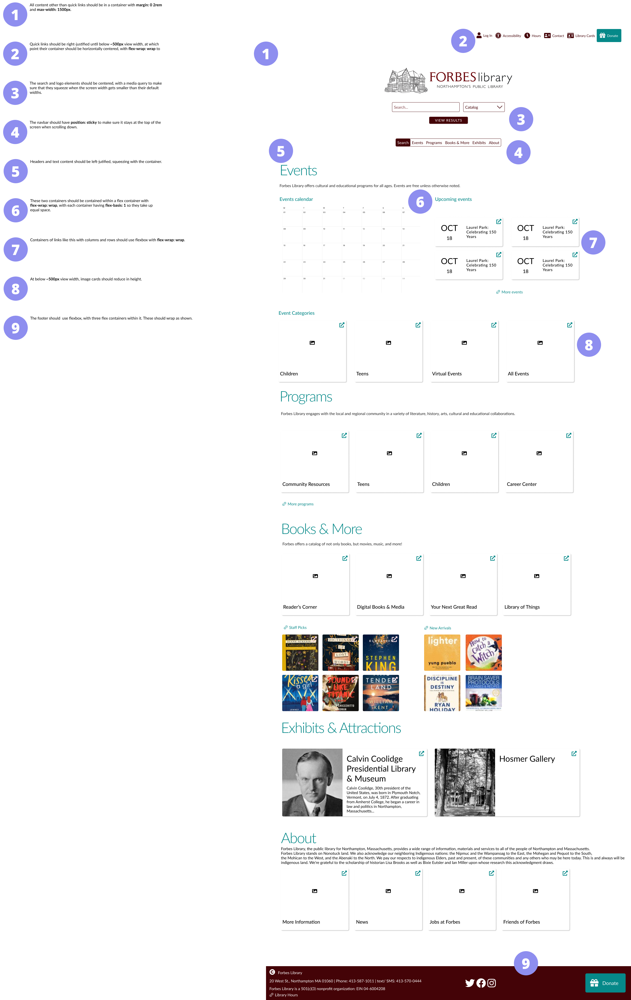
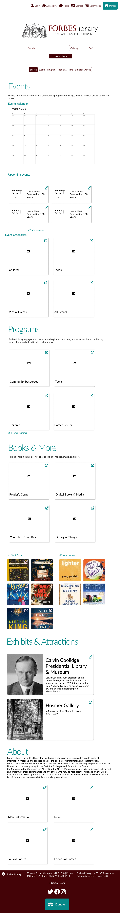

Responsive Redesign: Forbes Library
by Anoetic Beaver 🦫
About
Forbes Library is Northampton, Massachusetts’ main public library, located centrally in downtown. Apart from providing books and other media to the public, it also provides other community resources and services like hosting events. I chose this site to redesign because, especially in an increasingly virtual world, public libraries should provide simple, clean, and straightforward interfaces for people to interact with online. I have identified several ways in which the existing Forbes site fails to do this, which I will discuss below.
Usability Problems
Please refer to the annotations on the image above for the sections of the website I specify by number.
USABILITY
The following are usability problems I found with the Forbes site.
-
Inconsistency in buttons: the site uses inconsistent styles for buttons, varying by
size, color, shape, font, etc.
- 1 — small, but nicely styled
- 2 — searchbar looks out of place, and is too small
- 6 — is this even a button?
- 9 — are there two functions here? Nowhere else is an icon used as a button.
-
Unclear hierarchy: it’s hard to know what to focus on, since some elements are smaller
than expected and others are larger than expected. Furthermore, content is laid out in three columns,
where hierarchy is unclear. Finally, there are many visual elements that don’t serve a functional
purpose — hard to differentiate which are functional and which aesthetic.
- 1 — smaller than expected, with little to make it jump out
- 2 — very small for such a useful feature, especially on a cluttered site
- 5 — small for such a useful feature, without its own heading
- 10 — small and squeezed awkwardly to the side and down the page
- 6 — larger than expected, could be at the top
- 8 — way larger than expected, what’s its purpose?
- 4 — what is this section?
-
Busy and cluttered: although the core design is fairly minimalist, a lot of content is
squeezed into a small amount of space, without clear hierarchy between what one should focus on first
-
3 — I feel overwhelmed as a user when I look at the menu links; too many!!
-
Unclear interaction cues: it’s unclear which elements are clickable, since button
styles are inconsistent. E.g., are the images on the left clickable? What will happen if I click them?
- 4 — this image has a caption, but the others don’t, is there a difference in clickability?
- 7 — these are just images, but are they clickable? Turns out, the whole section is a link.
-
User state: there is no indication whether the user is logged in or not. In this case,
they are not, but there is no warning to that effect.
- 1 — ”my account” does not warn me that I do not have a logged in account
- Nesting: menu items have many nested items, making it hard to find exactly what I want
LEARNABILITY
The following are issues I found with learnability, i.e., difficulty the user might face in forming an effective mental model of the site.
- Lack of journey guardrails: where is the starting place, and where should you go from there? What’s the expected flow? Since almost all content appears in the initial view, and combined with confusing hierarchy, hard to tell.
-
Lack of clear modules: a lack of clear hierarchy and differentiation of functional and
non-functional elements makes it hard to learn the steps required for a certain task. Needs a clear
demarcation of which sections of the site serve which purpose.
- 1 — a good example of modularity, because I can see some quickly accessible, clearly demarcated sections of the site where I might go to get information or do things
- 2 — too small to be highly noticeable, and does not have clear demarcation between searching the website and searching for books. Why are these the two options, instead of searching events, for instance?
-
Inconsistency: inconsistency of design makes it hard to learn how to interact with
different elements
- (See above)
MEMORABILITY
The following are issues I found with memorability, i.e., how easily the user can figure out and remember the steps necessary to complete a particular task.
-
No site map: very hard to visualize the layout of the site, since there’s no clear
structure (events, books, galleries, etc., where are they??)
- 3 — how are these tabs organized, which ones lead to different pages?
-
Headers: on just the main page, there are inconsistent uses of headers to define
sections, which makes it hard to remember which sections have which content
- 4 — what’s this section?
- 5 — no header, fails to stand out
Conceptual Model
How does a user conceptualize a public library’s website? In the absence of real user research, I’ll make some assumptions about the purposes a user has in using the site, and how they therefore conceptualize the site’s functionality and content.
USER GOALS
A user might have the following goals in visiting a public library website:
- View the library’s catalog of books and other media, and reserve one or more items, either from this library or another one.
- View upcoming community events.
- Explore the library’s archives and databases.
- View current gallery/museum content and offerings.
- Check quick facts like hours, COVID-19 policies, return policy, etc.
EXPECTED FLOW
Given these goals and given the current design of the site’s home page, a user might construct the following mental model:
- Check (1) for login and quick links
- Jump to the buttons below (1) because of size, check for quick functions, don’t find any of my core goals
- Scan (3) for what I’m looking for
- Sweep rest of the content, checking for expected functionality
- Notice (2) and do raw search for function or content, or search catalog
- Eventually notice (5) and click through, likely don’t use
Accessibility
The following are accessibility problems found by WAVE
-
Empty header tag → WAVE finds three instances of empty headers.
- This is a real issue, since it will lead to confusion when using screen readers.
-
Ambiguous link text → WAVE finds that four links have ambiguous text.
- For instance, one link simply says “more,” which, when read out of context, would have no meaning to a visually impaired user.
-
Device-dependent handlers → WAVE finds two instances of device-dependent handlers,
where only mouse events are handled.
- This matters for mobile users, and might make certain parts of the site completely unusable. It also belies a lack of attention to mobile devices in general, which might hint at other issues that arise on mobile.
Planned Changes
Given the problems identified and the expected conceptual model, I plan on making the following changes:
- Increase consistency with a consolidated style guide.
-
Divide content into clear sections, organized by which user goal they serve:
-
Quick links/actions
- Account
- Hours
- Contact
- Accessibility
- Donate
-
Search and browse
- Books and other media
- Archives and databases
-
Events
- Calendar
- Upcoming events
- Programs
- Exhibits and attractions
- About the library
-
Quick links/actions
- Remove side columns to simplify layout
- Add clear interaction icons, particularly for images
- Add login state
- Add headers for each section to clearly define demarcation
Low-fidelity Prototypes
To begin designing, I created three low-fidelity prototypes.
DESKTOP
TABLET
MOBILE
Design System
The design system I created for this project.
High-fidelity Prototypes
Using my design system, I created the following three high-fidelity prototypes.
DESKTOP
TABLET
DESKTOP